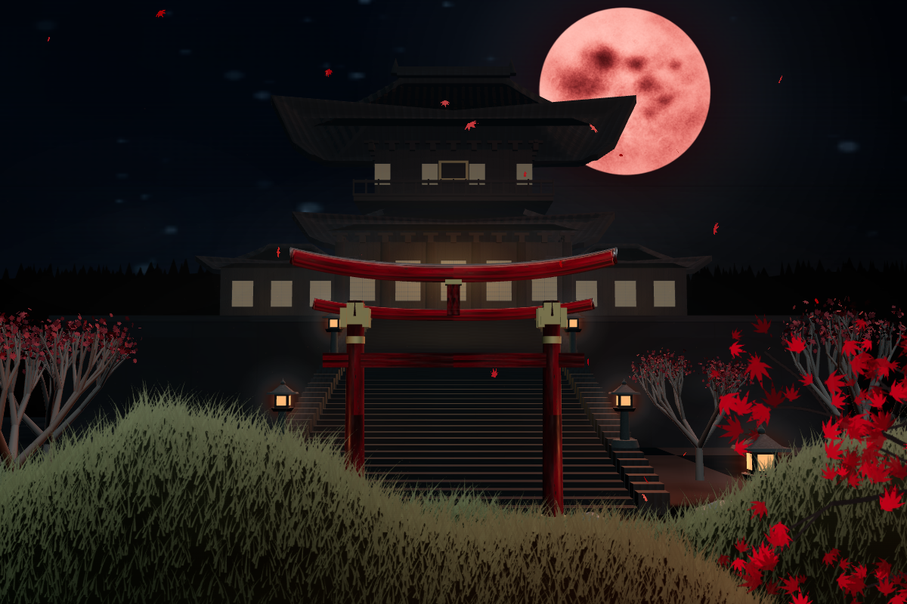

НОЧНОЙ ЯПОНСКИЙ САД
Побудьте
здесь.
Алые клёны, тёплые фонари и луна над храмом. Выберите ракурс — и найдите своё настроение.
Собрать свою атмосферуTHE MOONLIT SANCTUARY
静けさ / ТИШИНА
Перед вами кадр модели. Откройте 3D, чтобы перемещаться по саду.
ВАША АТМОСФЕРА / ТРИ ШАГА
Один сад.
Разные истории.
Свет меняет настроение. Дождь добавляет движение. Ракурс выбирает главного героя. Попробуйте три варианта и сравните.
- КОМПОЗИЦИЯ
Начните с тишины
Общий план, мягкий свет и сухая погода. Посмотрите, как ворота, храм и луна собираются в одну композицию.
- СВЕТ И ДВИЖЕНИЕ
Измените настроение
Добавьте дождь и поднимите свет до 130%. Заметьте, что стало заметнее — архитектура, фонари или листва.
- ВАШ РАКУРС
Приблизьтесь к храму
Выберите главный объект. На кадре меняется приближение, а в 3D камера перемещается внутри объёмного сада.
Создайте спокойную и драматичную версии сада. Сохраните три параметра: свет, дождь и ракурс. Объясните, какой сильнее изменил настроение.
ЗА КАДРОМ
Внимание
к маленькому.
Этот сад — небольшая интерактивная работа о свете и композиции. Измените несколько деталей, и знакомое место начнёт ощущаться иначе.
Как устроена сцена
Сначала показан настоящий кадр 3D-модели. Без WebGL доступны его яркость, кадрирование и отдельный слой дождя. Это обработка изображения: новая геометрия из картинки не создаётся.
После запуска 3D открывается объёмная сцена на Three.js: камера, свет, дождь и движение листьев работают внутри модели. Лёгкий режим отключает тяжёлые эффекты. Пауза и настройки уменьшенного движения учитываются в обоих режимах.